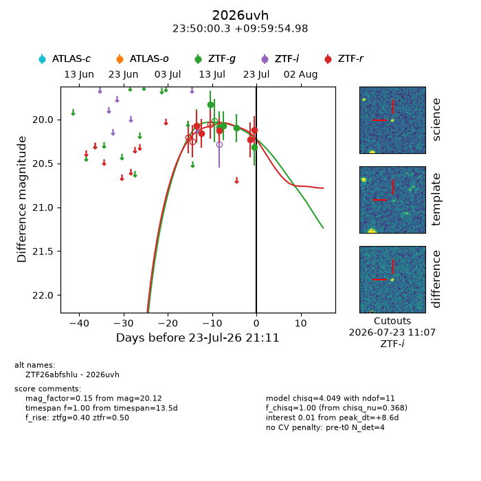
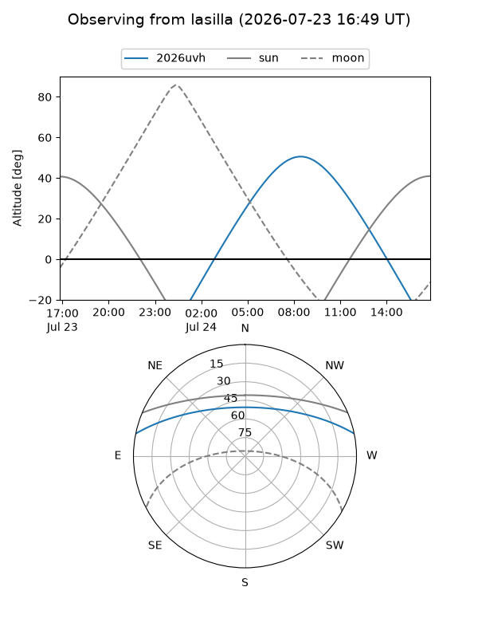
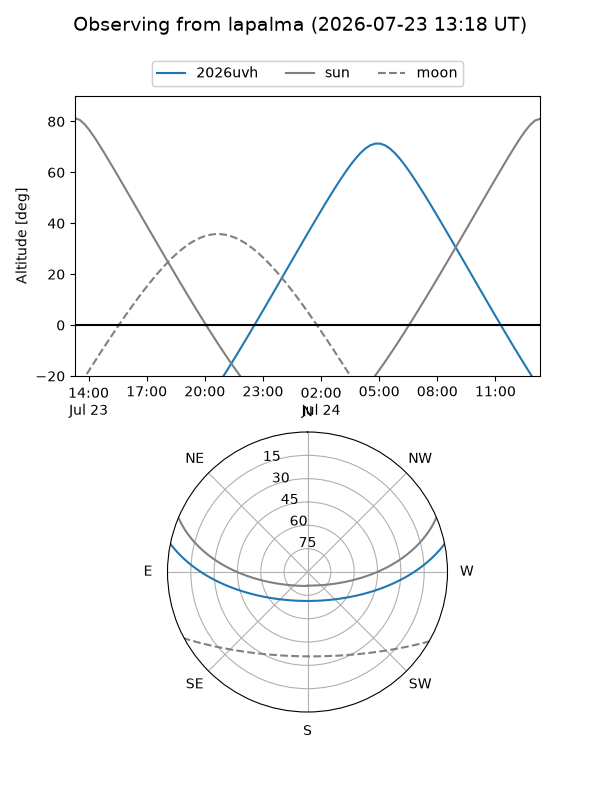
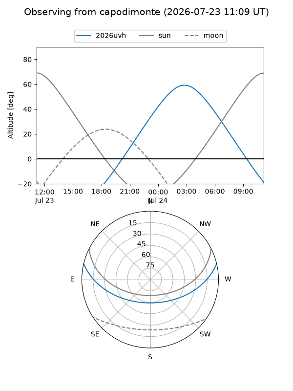
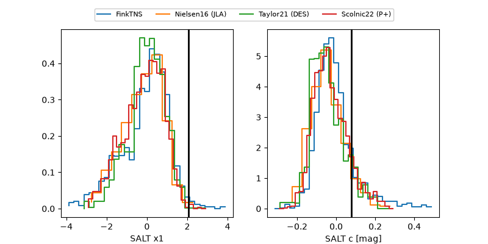

2026uvh
Target 2026uvh at 2026-07-23 21:14
Aliases and brokers:
FINK-ZTF: ztf.fink-portal.org/ZTF26abfshlu
Lasair-ZTF: lasair-ztf.lsst.ac.uk/objects/ZTF26abfshlu
ALeRCE-ZTF: alerce.online/object/ZTF26abfshlu
YSE-PZ: ziggy.ucolick.org/yse/transient_detail/2026uvh
TNS name: wis-tns.org/object/2026uvh
Direct TNS query: direct search
alt names
ZTF26abfshlu (ztf,fink_ztf)
2026uvh (tns,yse)
Coordinates:
equatorial (ra, dec) = 357.5014,+9.99861
equatorial (HMS+DMS) = 23:50:00.33,+09:59:54.98
galactic (l, b) = (98.9941,-49.99620)
Flags:
TNS type: nan
peak dt: +8.6
Photometry:
last ztfg=20.31, ztfr=20.12
6 ztfg, 5 ztfr detections
Lightcurve

Visibility



Additional plots
